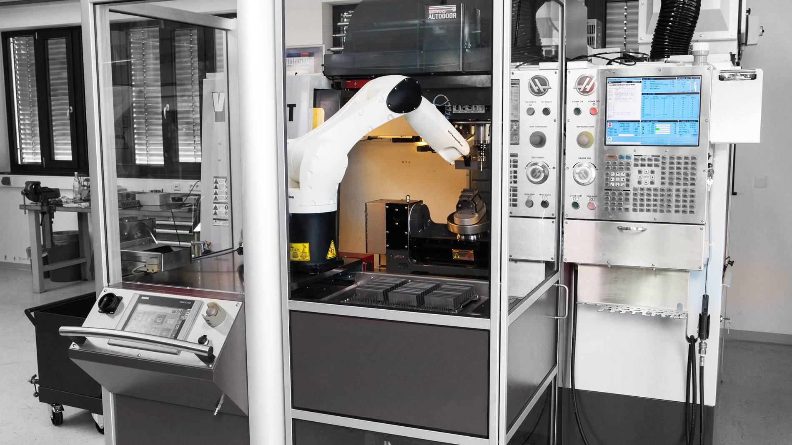

Kinematics
Why kinematics matters
An industrial robot arm is a collection of joints and links. The controller commands the joints, but the production task usually cares about the tool: where is the TCP, which direction is the tool pointing, and how does it move through the workpiece?
Kinematics is the connection between these two descriptions. It describes how joint positions create the position and orientation of the tool, and how a desired tool pose can be converted back into joint positions.
Following the notation used by Corke, we use q for the robot’s joint coordinates and T for a pose represented as a homogeneous transformation matrix (Corke 2023). In practical terms:
qdescribes the robot in joint space.Tdescribes the TCP in Cartesian space.- forward kinematics computes
Tfromq. - inverse kinematics computes one possible
qfrom a desiredT.
This page uses simple planar robot arms to explain the concepts. Real industrial robots move in 3D and usually have six axes, but the same ideas apply.
Joint space and Cartesian space
Joint space is the robot’s internal view of motion. A six-axis industrial robot has six joint coordinates: q1 to q6. When the robot moves in joint space, each axis moves from one joint angle to another. The TCP path is whatever comes out of those coordinated joint motions.
Cartesian space is the task view of motion. Here we describe the TCP by position and orientation relative to a frame, for example the robot base frame, a work object frame, or a tool frame. This is the view that matters when a welding torch must follow a seam, a gripper must approach a part, or a dispensing nozzle must stay normal to a surface.
Industrial robot controllers expose both views. On Universal Robots, MoveJ is a joint-space move and MoveL is a linear Cartesian move. On KUKA robots, the corresponding terms are typically PTP and LIN. KUKA also uses CIRC for circular Cartesian motion, while Universal Robots has MoveP for process-style blended motion. The vendor names differ, but the underlying distinction is the same: either the controller prioritizes joint motion, or it prioritizes the TCP path.
Forward kinematics
Forward kinematics answers the question:
If the joint positions are known, where is the TCP?
The simplest case is a one-joint planar arm. This is like a pendulum with a known length. The basic tool we use here is trigonometry. If the link length is L1 and the joint angle is q1, the link forms the hypotenuse of a right triangle. The horizontal part of the link is the adjacent side, so it is found with cosine. The vertical part is the opposite side, so it is found with sine:
\[ x = L_1 \cos(q_1) \]
\[ y = L_1 \sin(q_1) \]
q1 + q2 because joint 2 is mounted on a link that is already rotated by q1.Adding more links repeats the same idea. Each link contributes an x component and a y component, but the angle of each link depends on all the previous joints. L1, L2, and L3 are the link lengths, while q1, q2, and q3 are the joint angles. For a three-link planar arm, the TCP position becomes:
\[ x = L_1 \cos(q_1) + L_2 \cos(q_1 + q_2) + L_3 \cos(q_1 + q_2 + q_3) \]
\[ y = L_1 \sin(q_1) + L_2 \sin(q_1 + q_2) + L_3 \sin(q_1 + q_2 + q_3) \]
The exact equations for a real six-axis robot are more complex, but the principle is the same: the controller combines the geometry of all links and joints to compute the pose of the tool. For a full walkthrough of the 6DOF case, see Corke (2023, chap. 7).
In practice, this is often used like a function call. The robot model and tool data are already known to the controller or simulation software, so the joint positions are the input and the TCP pose is the output:
q = [q1, q2, q3, q4, q5, q6] # joint positions
T_base_tcp = forward_kinematics(q) # pose of the TCP in the base frameThe returned pose T_base_tcp describes the TCP position and orientation relative to the robot base frame. Different software packages use different names and data formats, but the idea is the same.
Forward kinematics is used whenever the robot controller, simulation software, or offline programming system needs to know where the TCP is for a given robot configuration. It is also used when jogging individual joints, checking reach, simulating robot motion, and visualizing the robot in a digital model.
Robot models and DH parameters
To compute kinematics, the software needs a model of the robot geometry. This model describes how the joints and links are connected. Denavit-Hartenberg parameters, often called DH parameters, are one common way to write this model down.
The planar arm above only needs link lengths and joint angles because all joints rotate in the same plane. A real industrial robot needs a richer description. Its joint axes can be offset from each other, twisted relative to each other, and arranged so that the arm can leave the plane and move in 3D. DH parameters capture these distances and angles between neighboring joint axes in a compact way.
For this course, the important point is not how to derive DH parameters by hand. In normal industrial use, the model is already provided by the robot controller, the manufacturer, or the simulation software. In Visual Components, for example, we normally select a robot model that already contains the relevant geometry and joint limits. We use the model; we do not usually build it from scratch.
If you want to see how DH parameters are derived for a particular robot, have a look at the following visual explanation, or see Corke (2023, 7.1.5).
Inverse kinematics
Inverse kinematics answers the opposite question:
If the desired TCP pose is known, which joint positions should the robot use?
This is the problem the controller solves when we teach a Cartesian target, jog the TCP in a tool frame, or command a linear move to a pose. It is also the problem behind offline programming, camera-guided picking, and simulation.
For example, consider a machine-tending task (Figure 1). The part is at a known position in the CNC machine, and the gripper must approach it with a known orientation. The task is naturally described as a desired TCP pose. The robot, however, can only be commanded through its joints. Inverse kinematics is the step that answers: which joint angles will put the gripper at that pose?

This problem has a different character than forward kinematics. Forward kinematics is a direct calculation: insert the joint angles into the robot model and compute the TCP pose. Inverse kinematics works backwards from a desired TCP pose. For some standard industrial robot geometries, the controller can use a specialized analytical solution. In more generic software tools, inverse kinematics is often solved numerically as a root-finding or optimization problem. The solver starts from a likely robot configuration, adjusts the joint angles, checks the resulting TCP pose using forward kinematics, and repeats until the pose error is small enough.
Inverse kinematics is more complicated than forward kinematics for three practical reasons:
- There may be no solution because the target is outside the robot’s workspace.
- There may be several solutions for the same TCP pose.
- A mathematical solution may violate joint limits or collide with equipment.
The second point is especially important in industrial robotics. A six-axis arm can often reach the same TCP pose with different shoulder, elbow, and wrist configurations. On a planar arm this appears as an elbow-up or elbow-down solution. On a real robot, the equivalent configuration choices can decide whether the robot avoids a fixture, stays away from a singularity, or approaches the part from the correct side.
The demo below uses a three-joint planar arm to control a three-coordinate planar TCP pose: x, y, and tool angle. In that sense, the example is non-redundant: there are three joint variables available and three task coordinates to control. Still, non-redundant does not always mean unique. The geometry can give a small number of separate inverse kinematics solutions.
In the demo, this appears as the Elbow down and Elbow up buttons. The TCP pose is the same, but the joint solution is different. This is a discrete switch between solution branches. It is different from redundancy and nullspace motion, which are discussed in Section 5.1.
The cross is the desired TCP pose. Drag it to a new position and the robot solves for joint angles that move the TCP toward that goal. The small delay is intentional: it shows that the robot is not being dragged directly; an inverse kinematics calculation is being performed between the target pose and the joint angles. Move the target toward the edge of the workspace and the demo will indicate when the requested pose is not reachable. The demo only checks reach and joint geometry; it does not check for self-collision or collision with external equipment.
In a production cell, inverse kinematics is usually hidden inside the robot controller. The programmer does not normally solve the equations manually. The important skill is to recognize when the controller is struggling: unreachable targets, awkward configurations, unexpected wrist flips, or paths that require the robot to pass too close to a singularity.
As a function call, inverse kinematics has the opposite input and output from forward kinematics. In practice, we often also provide the current joint positions or a preferred configuration so the solver knows which solution branch to choose:
T_base_tcp_goal = desired_tcp_pose()
q_current = current_joint_positions()
q_solution, status = inverse_kinematics(
T_base_tcp_goal,
seed=q_current,
configuration="elbow_down"
)The returned q_solution is a set of joint positions. The status tells whether the solver found an acceptable solution.
Redundancy and nullspace
It is useful to relate inverse kinematics to the number of independent joint motions available for the task:
- A robot is fully actuated for a task when it has enough independently controlled joints to control all required task coordinates. A typical six-axis industrial arm can control a full 3D TCP pose: three position coordinates and three orientation coordinates.
- A redundant robot has more joints than the task strictly requires. A seven-axis arm, or a six-axis arm mounted on a linear track, can often reach the same TCP pose in many more ways.
- An underactuated robot has fewer controllable joints than the desired task requires. For example, a simple four-axis palletizing robot can place boxes in many positions, but it cannot freely choose every possible tool orientation.
The planar demo above is non-redundant for the selected task because it uses three joints to control x, y, and tool angle. If we removed the tool-angle requirement and only asked the TCP to reach an x,y position, the same arm would become redundant for that smaller task. It would have three joints for a two-coordinate task, so the same point could be reached with many different robot configurations. These configurations would place the TCP at the specified x,y coordinate, but with different tool angles.
For redundant robots, the extra freedom is often described as nullspace motion. This means continuous joint motion that changes the robot posture without changing the task coordinate we care about. A common industrial example is a seven-axis robot that keeps the TCP fixed while moving its elbow away from an obstacle. The important word is continuous: the robot can move through a range of postures while the TCP task remains satisfied.
This is different from the Elbow down / Elbow up switch for the fully actuated robot in the demo. That switch selects between separate inverse kinematics branches. It is a discrete configuration choice, not a continuous nullspace motion. Both ideas matter in industrial programming: configuration branches decide which posture family the robot uses, while redundancy gives the controller extra room inside a task.
Figure 2 shows this idea on a Franka Research 3 robot. The end-effector pose is held fixed, while the body of the robot is made compliant enough that a person can push the elbow around.
Path, trajectory, and movement type
A path is the geometric route followed by the TCP. A trajectory is that path plus timing: for example the chosen velocity and acceleration profiles. Two robot programs can therefore have the same path but different trajectories. They can also have the same start and end poses but different paths, depending on the selected movement type.
In industrial robot programming, motions are still often built from key poses of the TCP: home, approach, process start, process end, retreat, and so on. Once those poses have been taught or calculated, the programmer has to decide how the robot should connect them. The practical question is: does the TCP need to move through Cartesian space in a particular way to achieve the task, or is it enough that the robot reaches the next key point safely and efficiently?
The movement type answers this connection question. It tells the controller whether to interpolate in joint space or in Cartesian space. This choice can change the geometric path of the TCP, even if the start and end poses are the same.
A joint-space move, such as MoveJ on Universal Robots or PTP on KUKA, interpolates from one joint configuration to another. This is often the best choice for repositioning because it is robust and usually fast. The TCP path is not prescribed and is usually not a straight line, so this movement type should not be used when the tool must follow a process path.
A Cartesian linear move, such as MoveL on Universal Robots or LIN on KUKA, interpolates the TCP along a straight line. This is the right choice for many process operations: welding, dispensing, inserting, scanning, or approaching a part along a known direction. The cost is that the controller must continuously solve inverse kinematics along the line. Near difficult configurations, a simple straight TCP path can require uncomfortable joint motion.
In practice, these choices are usually made together in one motion command. For understanding what the command does, it is still useful to separate the ideas: the movement type mainly describes the geometric route, while speed and acceleration settings describe the timing.
In the demo, the orange dashed path represents a Cartesian linear move (MoveL/LIN) and the green path represents a joint-space move (MoveJ/PTP). The small graphs show how the TCP coordinates and joint angles change during the selected motion. For MoveL/LIN, the controller interpolates the TCP pose, so the TCP graph is the direct one and the joint angles are the result of inverse kinematics along the line. For MoveJ/PTP, the controller interpolates the joint angles directly, so the TCP path is a result of the joint motion and usually bends. A straight graph line means that quantity is being interpolated directly; a curved graph line is a consequence of the robot kinematics. The joint-travel bars show the accumulated motion of all joints combined. In this example, the Cartesian linear move needs more total joint travel because the controller must keep the TCP on the straight line. A joint-space move often gives simpler joint motion for free-space repositioning, even though the TCP path is no longer prescribed.
Singularities and the Jacobian
A singularity is a robot posture where the robot loses a useful motion possibility. Because of the geometry of the posture, some joint motions no longer create independent TCP motions. The robot may therefore be unable to move the TCP freely in all the directions the task might ask for. A very small requested TCP motion can then require very large joint motion.
Common practical examples include:
- a robot arm that is almost fully stretched,
- a wrist configuration where two wrist axes line up,
- a target orientation that forces the robot into an awkward posture,
- a linear move that passes through a difficult configuration.
Many singularities are easy to recognize because joint axes line up or become parallel. This is a useful visual warning, especially for wrist singularities, but it is not the definition and not the only possible cause. The more general test is whether the current robot posture has lost an independent TCP motion direction.
ISO 10218-1:2025 defines a singularity as the “occurrence whenever the rank of the Jacobian matrix becomes less than full rank” (International Organization for Standardization 2025). That is a compact technical definition, but the practical meaning is simple enough:
- the Jacobian describes what TCP motion the current robot posture can create from joint motion,
- the rank says how many independent TCP motion directions are actually available,
- less than full rank means that at least one required motion direction has been lost.
For a typical six-axis robot doing a full 3D pose task, “full rank” means that the robot can create the six independent TCP velocity components: three for position and three for orientation. Not full rank means that the robot can only create fewer independent TCP velocity components in that posture.
As the robot approaches a singularity, some Cartesian TCP motions require very large joint speeds. At the ideal mathematical singularity, the required joint speed can become theoretically infinite, or the requested Cartesian motion may not be possible in that direction at all. This is why singularities must be handled deliberately in the robot and in the task. A real industrial robot may slow down, limit motion, change behavior, or stop with a warning, but that is because the controller includes measures to deal with the singularity safely (International Organization for Standardization 2025, sec. 5.2.3). The geometry itself does not politely make the problem harmless.
The Jacobian view
Forward kinematics maps joint positions to the TCP pose:
\[ \text{TCP pose} = f(\text{joint angles}) \]
The Jacobian is the local motion version of that same idea. It tells how joint speeds create TCP speed at the current posture. In mathematics, a Jacobian is a matrix of derivatives. In robotics, the Jacobian we usually mean is the derivative of the forward kinematics function with respect to the joint coordinates. It answers a local question: if each joint moves a tiny amount, how does the TCP position and orientation change?
For the planar arm above, the forward kinematics equations give \(x\), \(y\), and tool angle from \(q_1\), \(q_2\), and \(q_3\). The Jacobian contains the local slopes of those equations. For a six-axis industrial arm, the same idea applies to the full TCP velocity: three translational components and three rotational components. Corke writes this velocity relationship using the Jacobian matrix \(J(q)\) (Corke 2023):
\[ \dot{x} = J(q)\dot{q} \]
Here, \(q\) is the current joint position, \(\dot{q}\) is joint speed, and \(\dot{x}\) is TCP speed. The important point is that \(J(q)\) depends on the current posture. As the robot moves, the Jacobian changes.
When the Jacobian is healthy, the robot can create the requested TCP motion without excessive joint speeds. Near a singularity, the same TCP motion can require much larger joint speeds. At the singularity, one independent TCP motion direction is no longer available at all. Robot singularities are called singularities because the Jacobian matrix becomes singular: it loses full rank. Robot controllers, offline programming tools, and simulation systems can test the Jacobian rank, or use related numerical indicators, to check whether a Cartesian move is feasible and whether the robot is getting close to a difficult posture.
Why movement type matters
This connects directly to MoveJ/PTP and MoveL/LIN. In a joint-space move, the controller interpolates joint angles. The TCP path is not prescribed, so the controller is not forced to keep solving for a specific Cartesian path between the points. This is one reason joint moves are often preferred for free-space repositioning.
In a Cartesian linear move, the TCP path is prescribed. The controller has to generate joint motion that keeps the TCP on the line, and the Jacobian is part of how the controller relates the requested TCP velocity to required joint velocities. If that line passes near a singular posture, the joint speeds needed to maintain the line can become very large. This does not mean that MoveJ avoids singularities in general. A joint move can still start, end, or pass near a singular posture. The difference is that a LIN/MoveL command makes the TCP path a hard requirement.
The animation below uses the same 3DOF planar arm as before, and must move between two full planar TCP poses: \(x\), \(y\), and tool angle. The marked area is around a folded-elbow singularity. Near that posture, motion along the folded link direction is not available in the same way as sideways motion. The blue motion-ability ellipse at the TCP shows this: when it collapses into a thin shape, the Jacobian is losing rank and one TCP motion direction has become difficult or unavailable.
The LIN/MoveL option forces the TCP through a straight Cartesian line while holding the tool angle fixed. In this example, that line passes close to the folded singularity. The PTP/MoveJ option interpolates the joint angles instead, so the TCP path bends around that posture. The horizontal status bar shows the relative joint-speed demand for the current part of the motion: it grows when a small TCP motion requires larger joint motion. This does not mean that MoveJ avoids singularities in general. It only shows that strict Cartesian path constraints can force the controller closer to a singular posture.
Real six-axis industrial robots have additional singularity families. For a typical wrist-partitioned arm such as a KUKA KR AGILUS, the common cases are:
- an extended position singularity, where the wrist center lies in the extension of the main arm links,
- a wrist-axis singularity, where wrist axes line up and two wrist rotations start to produce nearly the same tool motion,
- an overhead or shoulder singularity, where the wrist center is in an awkward relation to the base axis.
The exact names and warning behavior depend on the robot vendor, but the underlying idea is the same: the current posture makes the Jacobian lose an independent motion direction. Robots with a different mechanical structure can have different singularity patterns. For example, many collaborative robots such as Universal Robots arms have a different axis arrangement than a KUKA AGILUS, so the practical singularity situations and controller warnings are not exactly the same.
The video below shows typical singularities for a six-axis arm. Turn on captions if they are not shown automatically; the subtitles explain what happens in each case.
In practice, singularity problems are usually solved by changing the task setup or the programmed motion. We avoid singularities by changing the target pose, changing the approach direction, using another robot configuration, moving the part or fixture, or using a joint move for repositioning before starting a process move.
Practical rules of thumb
- Use joint moves (
MoveJ,PTP) for free-space repositioning. - Use linear moves (
MoveL,LIN) when the TCP path matters. - Keep process paths away from fully stretched arm configurations.
- Avoid unnecessary tool orientations that force wrist axes to line up.
- Teach approach and retreat points so the robot enters the process posture gradually.
- Check that targets are reachable with the desired tool orientation, not only with the desired position.
- Be aware that the same TCP pose can have several robot configurations.
- In simulation, inspect both the TCP path and the joint motion.
Exercises
In the forward kinematics demo, set the arm to one, two, and three joints. Move only
q1. What changes when more joints are added afterq1, and why does the TCP move even though those later joints are not changed?In the inverse kinematics demo, drag the target near the edge of the workspace. What happens to the joint angles? Switch between elbow-up and elbow-down. Which parts of the robot configuration change while the TCP pose stays the same?
In the motion type demo, compare
MoveJ/PTPandMoveL/LIN. Which motion gives a straight TCP path? Which graph is interpolated directly in each case? Compare the total joint travel bars. What does this tell you about free-space repositioning versus process motion?In the singularity demo, select
MoveL/LINand move through the folded elbow region. What happens to the blue motion-ability ellipse and the joint speed demand bar? Switch toMoveJ/PTP. Does the robot still have the same singularity, or does the path simply avoid getting as close to it in this example?Watch the six-axis singularity video with captions enabled. Identify one example of an extended-position singularity and one wrist-axis singularity. What robot axes or parts appear to line up in each case?
Choose a real task such as welding, dispensing, palletizing, or machine tending. List which parts should use joint moves and which should use linear moves. Then choose one target or approach direction you would adjust if the simulation showed a singularity warning.
Further reading
For more detail, see Corke’s treatment of robot arm kinematics, inverse kinematics, velocity relationships, and the Jacobian (Corke 2023). The mathematics is deeper than what we need in this course, but the notation is the same.